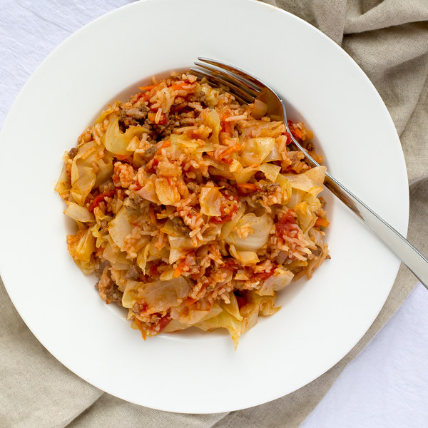

Home
Unstuffed Cabbage Rolls

Description
Cabbage with rice and ground beef cooked with tomatoes, onion, and
carrots.
Makes 4 servings
Ingredients
- 1 cup basmati rice
- 2 medium carrots
- 2 cans diced tomatoes
- 4 cloves garlic
- 11⁄2 lbs lean ground beef
- 1 medium head napa cabbage
- 1 medium yellow onion
- 1 tsp black pepper
- 11⁄4 tsp salt
- 2 cups water
Steps
-
Rinse the rice in a colander and transfer to a small
saucepan. Add water and salt; bring to a boil.
- 1 cup basmati rice
- 2 cups water
- 1⁄4 tsp salt
-
Wash and dry the fresh produce.
- 1 medium head napa cabbage
- 2 medium carrots
-
Once the water is boiling, reduce the heat to low, stir,
and cover. Cook until liquid is absorbed, 10 to 15
minutes. Remove from the heat and let it stand, covered,
for 5 minutes.
-
Trim off and discard the root end of the cabbage;
quarter the cabbage lengthwise, then cut crosswise into
1-inch pieces and transfer to a large bowl.
-
Peel and small dice the onion.
-
Heat a skillet over medium-high heat.
-
Peel and mince the garlic.
-
Add the beef, onion, and garlic to the skillet; cook,
breaking apart the meat into smaller pieces, until the
beef is browned and the onion is tender, 3 to 5 minutes.
- 11⁄2 lbs lean
ground beef
-
Add the diced tomatoes and cabbage and season with salt
and pepper. If the cabbage doesn't fit, cook it down and
add the rest after. Reduce heat to medium and cover.
Cook until the cabbage is softened, 10 to 15 minutes.
- 2 cans diced tomatoes
- 1 tsp salt
- 1 tsp black pepper
-
Trim the stem ends and peel the carrots; discard the
trimmings and coarsely grate the carrots.
-
Once the cabbage is softened, add the grated carrots and
rice to the skillet; stir to combine. Cook until the
carrots are softened, 1 to 2 minutes.
-
Divide the lazy cabbage rolls between plates. Enjoy!